You run a brewing house at the Wharf. Every turn you source grain and hops, brew them into casks, age those casks, and load them onto Ships bound for the four Kontore of the Hanseatic League.
A delivered cask scores ★ equal to its quality die, and that die stays parked at the Kontor as your presence there. The player with the most ★ at the end wins.
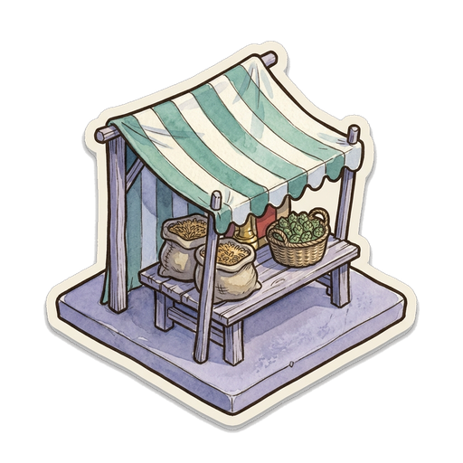
Sourcetake 3 goods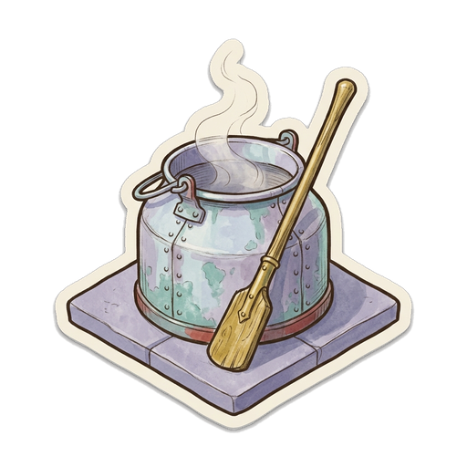
Brewa recipe becomes a cask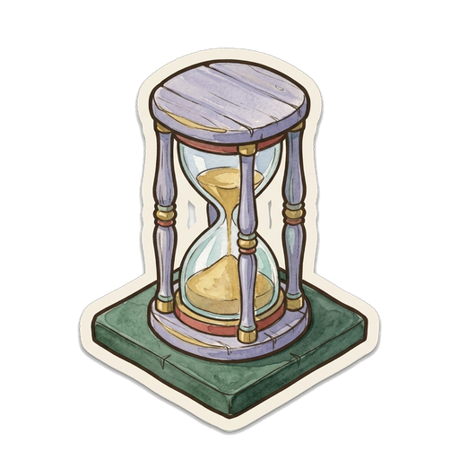
Ageturn the die up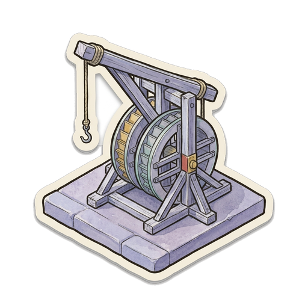
Shipload, sail, deliverThe four stations sit in that order on the board. You are never forced around it, and you will often work two steps at once.
| Station | PRIMARY — when your worker stands here · ALTERNATE — when it is the line’s other station |
|---|---|
| Market | Source 3. Take 3 goods in any mix. Alternate: Source 1 — take 1 good. |
| Brewhouse | Brew. Pay the brew cost of a recipe you hold. Search that beer’s stack and choose a tile into an open vessel, and set a die from your tray on it at the tile’s printed start value. Alternate: the same brew, but take the top tile of the stack blind. |
| Cellar | Age 3. Turn your aging dice up 3 steps in total, split freely across your vessels. This is the deepest source of aging in the game. Alternate: Age 1 — one step. |
| Harbor | Commission. Pay a Ship’s printed fee, Skute 2, Cog 1, Hulk free, and place it from the display onto any slot that has no Ship. A building already there is fine. You may then load 1 Ready cask onto it at once. A commission scores no ★. Alternate: Load 1 Ready cask onto any docked Ship, anywhere on the Wharf — a normal load. |
One die does five jobs. It is the cask’s age, its readiness, its ticket aboard, its ★ value, and a beat of the game clock. Follow one Bock through its life:
| Beer | Q | Steps | Starts | Brew cost | Fee |
|---|---|---|---|---|---|
| Gruit | 1 | 0 | 1 | 1 | starter |
| Hopped | 2 | 1 | 1 | 11 | starter |
| Broyhan | 3 | 1 | 2 | 12 | free |
| Keut | 3 | 2 | 1 | 21 | free |
| Mumme | 4 | 3 | 1 | 13 | 1 |
| Bock | 5 | 3 | 2 | 23 | 2 |
Gruit is Ready the moment it is brewed. Keut prints a perk: its delivery also places 1 presence, free. The fee column is what you pay to gain that recipe, at every channel including the Bruges prize.
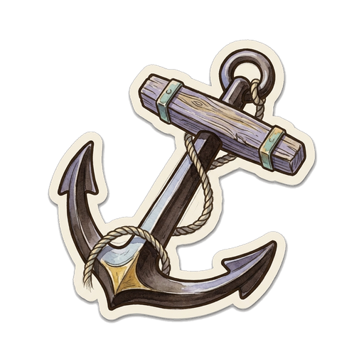
One turn, played outThe 8 slots ring the stations. Each holds up to 1 building underneath and 1 Ship on top. Buildings come in two families, and using either is always free.
Nobody builds them — they start the game. Setup stands 3–4 at random on random slots; the rest stay in the box. A Public Work is die-less furniture: every face fires passively on its own slot’s traffic, for whoever’s cask or Ship it is. The two ephemerals sail away with the Ship at their slot; otherwise a Public Work leaves only when a full wharf forces an L1 to redevelop it. Read what came out at setup — those tiles ARE this game’s wharf.
Your hand of 4 dual-use tiles. Each face prints two lines: a simple public line on top — gain 1 good · age +1 · shift the Bourse — that fires as a free stop for whoever activates a line through the slot, and the ringed owner line below, for you alone. You collect both. Playing one side of a tile forfeits the other.
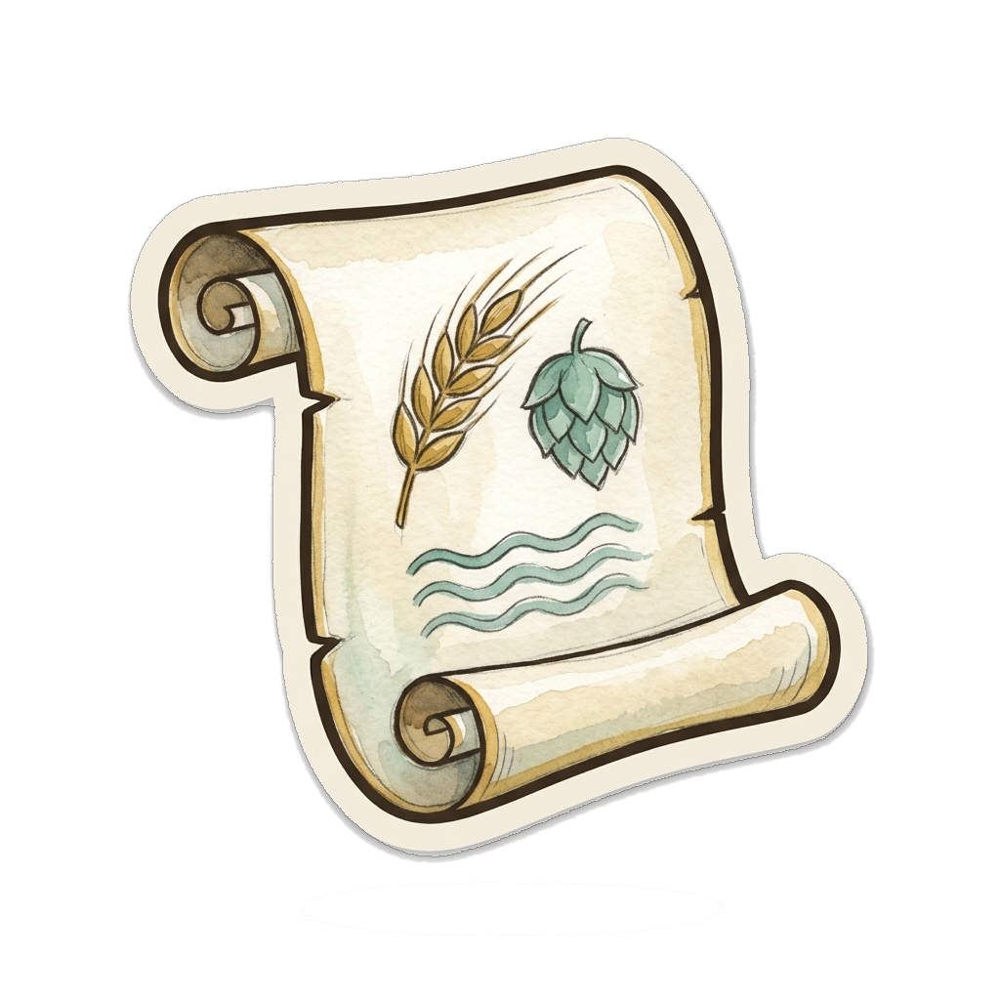
Die + trackShips are neutral. Each is bound for a printed Kontor and prints its minimum. They come from a display of 4, and every Ship not bound for Bruges carries a face-up Manifest card from the moment it enters the display.
| Hull | Berths | Fee to commission |
|---|---|---|
| Skute | 1 | 2 |
| Cog | 2 | 1 |
| Hulk | 3 | free |
Resolve a slot with a Ship docked at it. Take 1 Ready cask from your own vessels whose die meets the Ship’s minimum, seat it in the lowest empty berth, and fire the tile’s printed load bonus. The vessel it leaves is open again.
A Ship sails the moment it is full. A Skute sails on its first load.
Each cask aboard then delivers in boarding order. For each one, in turn:
The Ship returns to the bottom of its deck, its Manifest slides under the Manifest deck, and every delivered cask’s tile returns to the bottom of its beer’s stack.
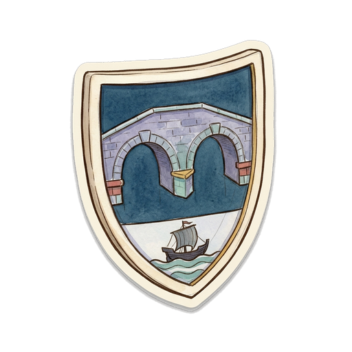
Bruges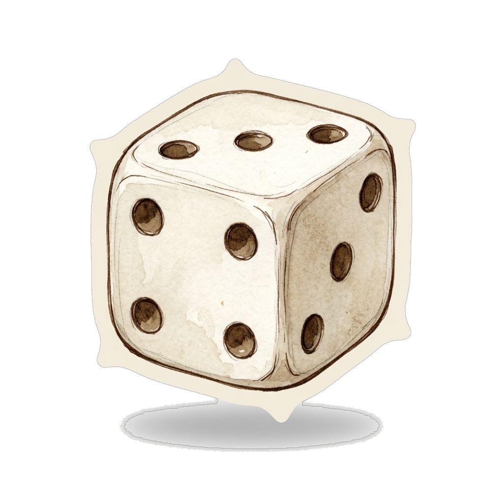
1+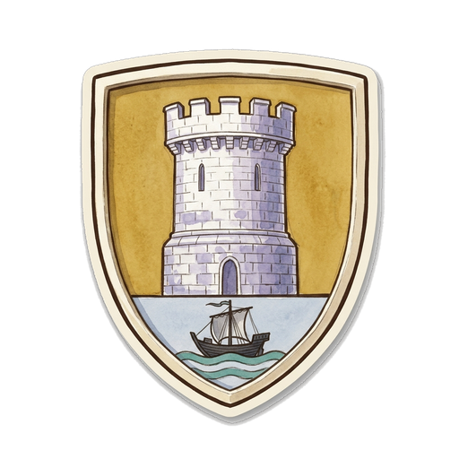
London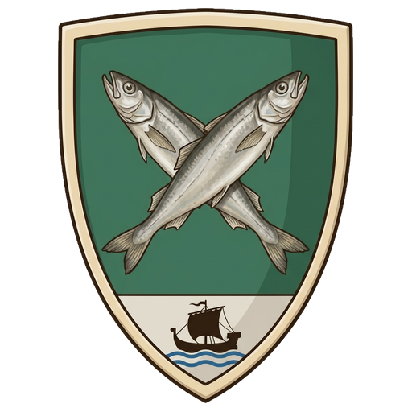
BergenYour presence at a Kontor is your parked dice there. They decide the majorities scored at the end of the game.
Some effects let you place presence. Take a tray die and park it at face 1 at a Kontor you have already delivered to. It scores 1★ and counts toward majority. It is always free.
Every non-Bruges Ship carries a Manifest card: three generic demand lines — a named starter, a quality tier, a die face, or a combo — each worth 1★ to 4★.
As the Ship sails, each delivered cask may claim one line it satisfies; the ★ score at once. A die line reads the parked face, after lifts and before Novgorod’s premium. The card then returns under the deck, pristine.
Specialists are private purple tiles that change how you work — each is a station superpower, bending one of your stations or flows. You have 2 seats, both open from the start.
Grain and hops are the only currency. There is no money and no spendable prestige.
Your storage cap is 8 goods. Anything gained above 8 is lost.
The game runs on one clock: the first empty tray.
The moment a player commits their last quality die, that player’s tray reads 0 and the final round is set. Finish the round so every player has had the same number of turns, then score.
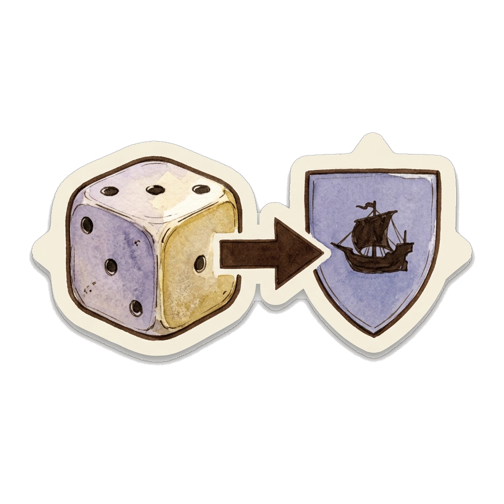
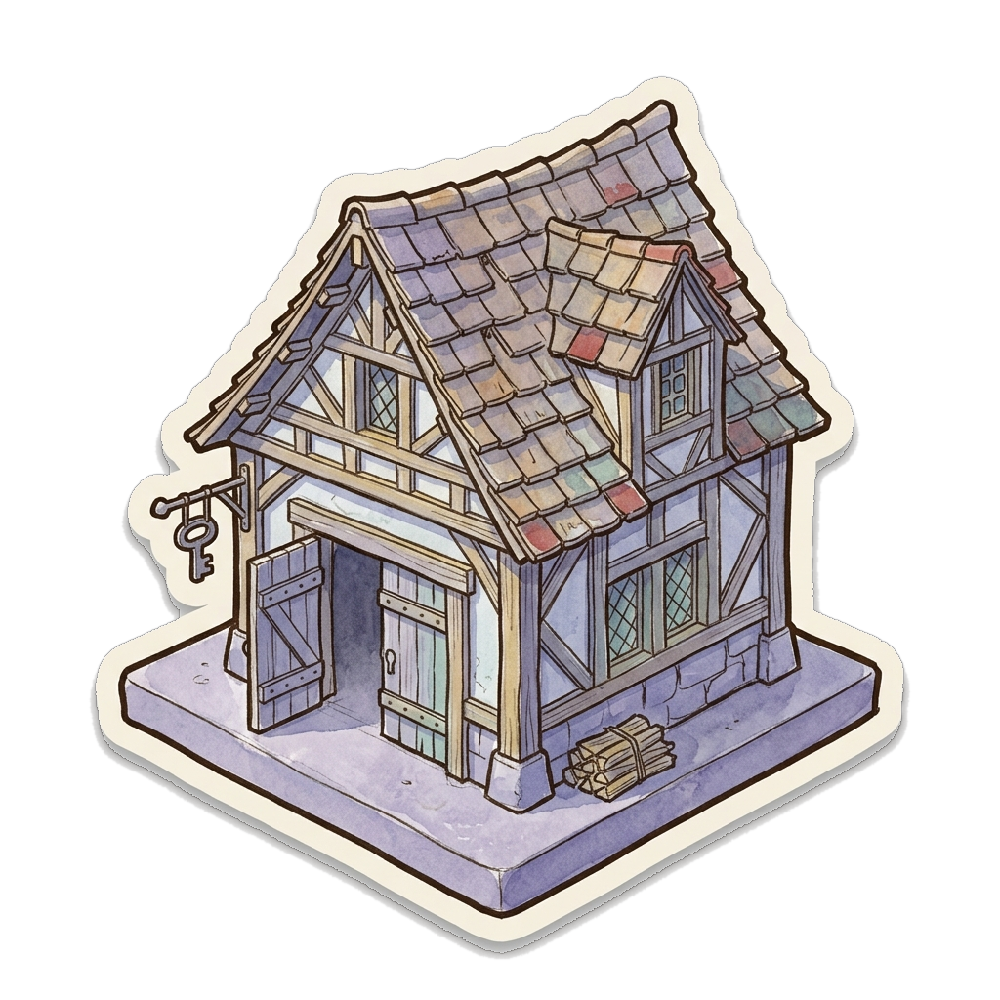
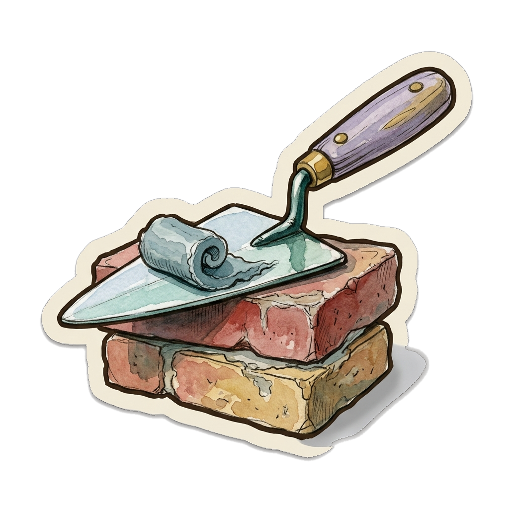
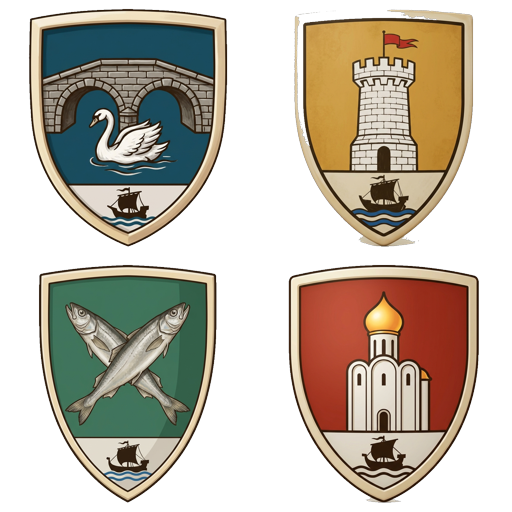
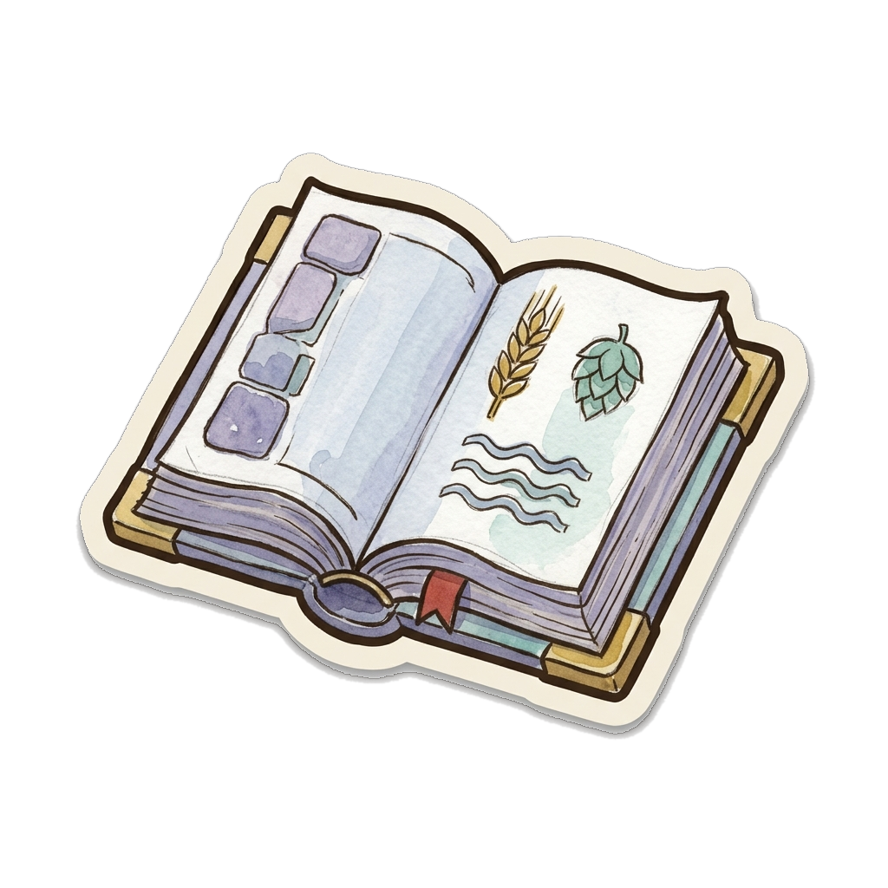
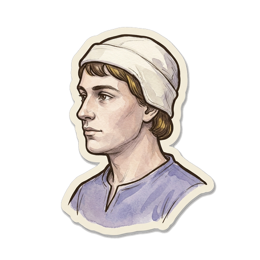
A beer counts for the Flight when its first cask loads onto a Ship, not when you brew it. Move its recipe card to the completed pile on the right of your board at that moment. Six is only reachable with the Jopenbier expansion.
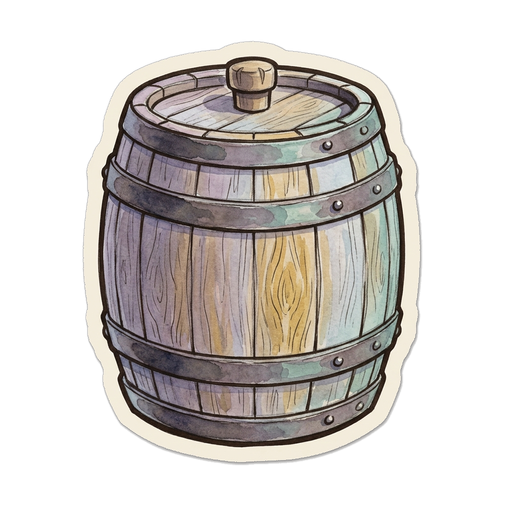
The Expansion Beers optionalTwo independent modules you may add at setup, in any combination. With both off the base game is unchanged. Everything else runs exactly as written.
Every expansion beer is pinned: all of its cask tiles print the same load bonus, and that bonus is the beer’s signature. Choosing to brew it is the whole decision. On the Bourse: a dealt specialty beer takes a price marker at 0 like any export — brews crash it, arrivals lift it, its casks score die + marker. Jopenbier alone trades off the Bourse (below).
Setup deals 3 of 7 exports instead of 3 of 4, guaranteeing at least one of Mumme or Bock so the quality climb still matters. All three specialty recipes are free to gain.
The Q6 vintage of Danzig, and the longest climb in the game. It is never dealt. Instead it is always available at every recipe channel for its fee of 3.
Brew it for 24. Its die starts at 2 and wants 4 aging steps. Ready at 6, it delivers 6★ anywhere and 8★ at Novgorod, and counts as a sixth beer for the Flight. It trades off the Bourse: no price marker, no crash, no rise — the 6 is contract-solid.